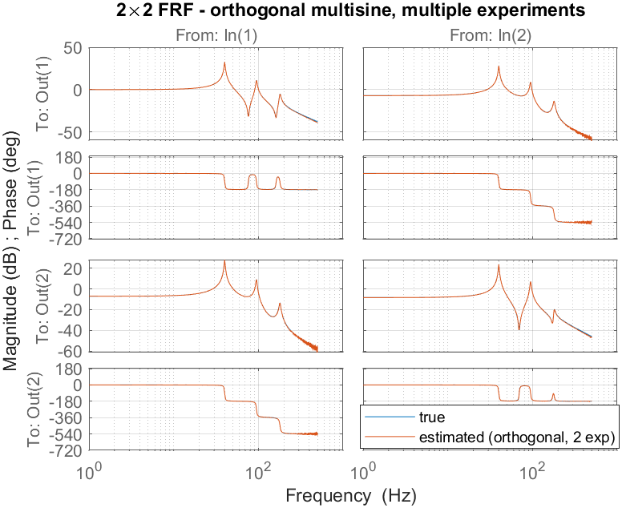
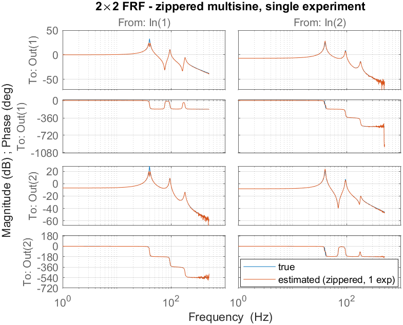
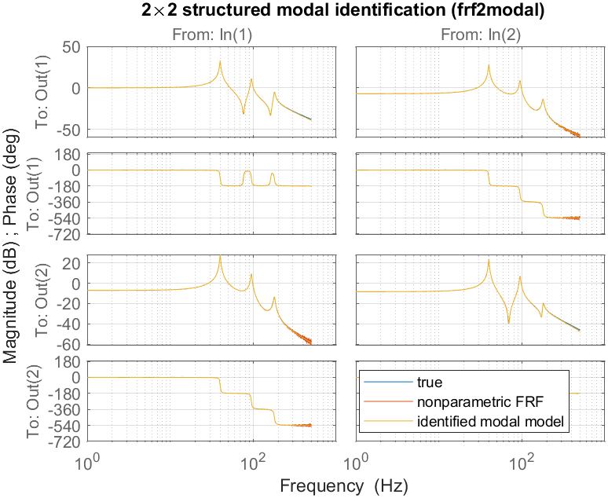

Result gallery for Examples/Tutorial_4_MIMO. This tutorial walks the full
multivariable workflow on a single 2×2 plant: design the excitation, measure
the FRF two different ways, and fit a structured modal model — using the same
benchmark (mimobench) and the same routines as the
MIMO Step series, so the two can be read side by side.
See also SISO Steps,
SISO Tutorials.
mimobench is a 2-input/2-output, reciprocal, proportionally-damped modal plant
with three flexible modes — each a rank-one residue g·φφᵀ over a 2nd-order
denominator (so it matches the structure that frf2modal targets). The (1,1)
DC gain is normalised to 0 dB.
| mode | frequency wn [Hz] |
damping ζ |
|---|---|---|
| 1 | 40 | 0.010 |
| 2 | 95 | 0.015 |
| 3 | 180 | 0.020 |
Output mode shapes φ = [1 1 1; 0.6 −0.8 0.4] give genuine (rank-one)
cross-coupling, so the off-diagonal terms G₁₂, G₂₁ are physically meaningful
— not numerical dust.
| setting | value |
|---|---|
sampling fs |
2500 Hz |
resolution df |
1 Hz |
| excited band | 1 – 500 Hz |
| periods / transient | nrofp = 5 / trans = 1 |
| output noise | 1e-3 (sets the FRF floor) |
multisine(nrofi = 2) builds two orthogonal (Hadamard) experiments: in each,
both inputs are driven with phase patterns that make the input matrix U(2×2)
invertible at every excited line, so G = Y/U yields the full 2×2 FRF at every
line (full per-channel resolution). This is the MIMO FRF of
Step_MIMO2.

The estimate (orange) overlays the true plant (blue) across the band; only the deep anti-resonances and the high-frequency roll-off (low SNR) show scatter.One record only: input 1 excites the odd excited lines, input 2 the even ones.
At any excited line a single input is active, so each FRF column is read off
directly; time2frf_ml interpolates each column onto the full grid. One
experiment instead of two, at the cost of half the per-channel resolution.

All four entries — including the off-diagonal cross-terms — track the true plant, becausemimobench has significant (rank-one) coupling. A resonance
sharper than the per-channel line spacing would be the limiting factor (see
Step_MIMO3 for the orthogonal, full-resolution LPM
alternative used when modes are very sharp).
frf2modal)mimobench is a proportionally-damped, rank-one modal system, so frf2modal
recovers the modal parameters directly from the orthogonal FRF estimate Pa
— exactly the Step_MIMO5 flow. The two-stage method first fits an additive model
(poles by nonlinear LS, residues by variable projection), then projects each
residue to rank one (SVD) and refines against the FRF
(van der Hulst et al., MSSP 247 (2026) 113948).

True plant, nonparametric FRF and the identified modal model overlap across the whole band.Console output (modal parameters and FRF fit — the frequencies and damping are recovered essentially exactly):
--- identified modal parameters ---
mode | wn_true wn_est [Hz] | z_true z_est
1 | 40.00 40.00 | 0.010 0.010
2 | 95.00 95.00 | 0.015 0.015
3 | 180.00 179.99 | 0.020 0.020
modal model FRF fit vs true : 99.08 %
A second call with 'damping','general' fits complex mode shapes
(general-viscous damping, eqs. (2),(6),(46)). It also fits proportionally-damped
data — the complex mode shapes then come out essentially real — so it is the
safe default when the damping structure is unknown:
general-damping wn_est [Hz] : 40.00 94.99 180.00
general modal FRF fit vs true: 99.06 %
cd Examples
addpath(genpath('../src'))
Tutorial_4_MIMO % runs methods A & B + modal identification
savefigs('Tutorial_4_MIMO')
n_in experiments but gives full
resolution; zippered needs one record but halves the per-channel resolution.mimobench and routines as the
Step_MIMO series — design → FRF → modal model — so results are directly
comparable.frf2modal recovers physical modal parameters (frequency, damping, rank-one
mode shapes) from the measured FRF, with proportional or general-viscous
damping.Generated from Examples_Tutorials_MIMO.md by private-notes/build_html.py — edit the .md, not this file.